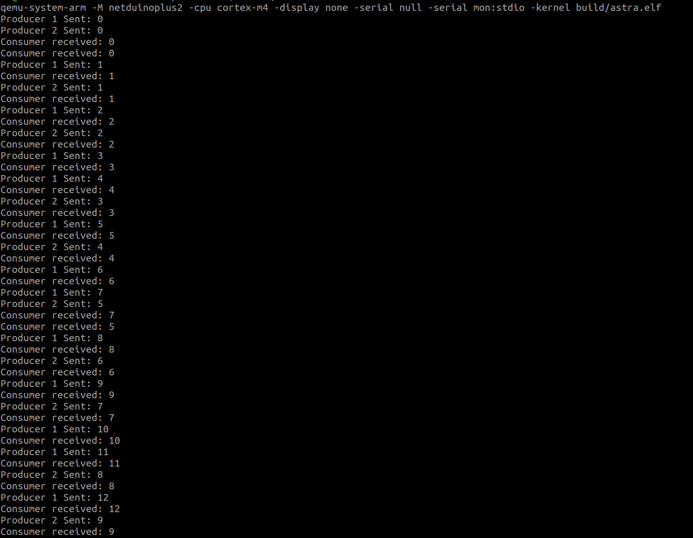
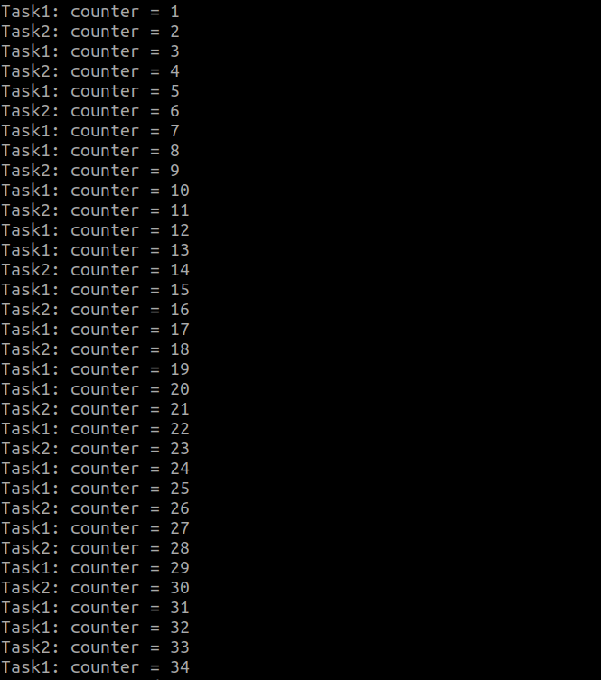

AstraRTOS is a real-time operating system (RTOS) built from scratch for microcontrollers based on ARM Cortex-M4, specifically targeting the STM32F4 Discovery board.
It features a preemptive, priority-based task scheduler, along with things like queues, mutexes, semaphores, and timers. It also has various low-level drivers that allow the OS to interact with the microcontroller's peripherals.
Hardware Demo
Stepper motor running using pwm driver implemented in astraRTOS
Terminal & Task Logs

Queue samples running on terminal

Shows 2 tasks switching and incrementing the same counter without any race conditions